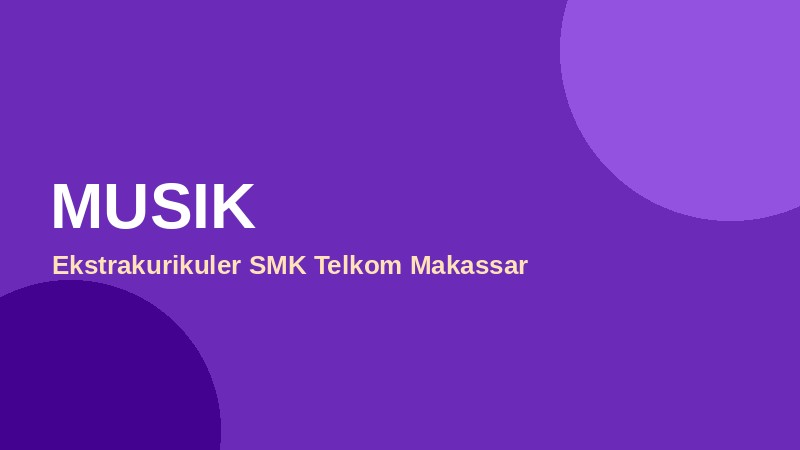

SMK Telkom Makassar
Ekskul Musik menjadi tempat siswa menyalurkan bakat bermain alat musik dan bernyanyi. Kegiatan ini melatih kepercayaan diri dan kekompakan.

| Hari | Jam | Tempat | Kegiatan |
|---|---|---|---|
| Rabu | 15.30 - 17.00 | Studio musik | Latihan instrumen |
| Jumat | 14.00 - 16.00 | Studio musik | Latihan band |
Ikuti kegiatan kami di Instagram Ekskul Musik.
Dibuat oleh Kelompok 4 - Kelas XI
© 2026